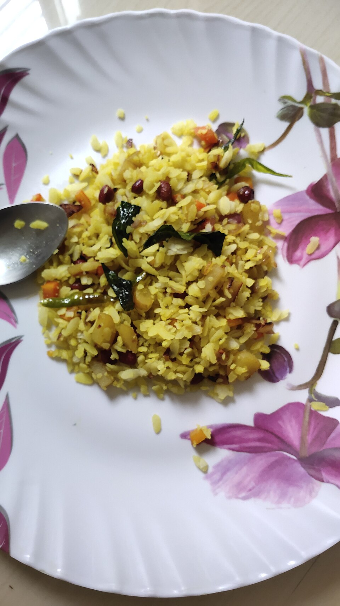

Instant Pot Veggie Poha — Swaminarayan Style (No Onion, No Garlic)

Vegetable-loaded poha made entirely in the Instant Pot Pro Plus on the Sauté Smart Program — no pressure cooking (pressure turns poha to mush). No onion, no garlic: a generous pinch of hing does the aromatic work, and capsicum, carrot, peas, and roasted peanuts give it body. One stainless pot, ~20 minutes.
Four rules (per the Pro Plus manual + hard experience): use thick poha (jada poha) — thin poha turns to paste; never pressure-cook it; Sauté at Custom level LE 3 (not the default High) with no lid while Sauté runs — lid only after Cancel; and ground spices never touch the pot directly — powders and the sugar go on the damp poha (or in as a water slurry), because they scorch onto bare stainless in seconds.
Ingredients
- 1½ cups thick poha (jada poha)
- 2 tbsp oil
- ½ tsp mustard seeds
- ½ tsp cumin seeds (optional)
- 2 generous pinches hing (asafoetida)
- 3 tbsp raw peanuts
- 8–10 curry leaves
- 1–2 green chilies, slit
- 1 small carrot, small dice
- 1 small potato, small dice (optional)
- ½ capsicum (bell pepper), diced
- ⅓ cup green peas (fresh or frozen)
- ¼ tsp turmeric
- Salt, to taste
- 1 tsp sugar
- 1 tbsp lemon juice
- Cilantro, chopped, to finish
- Sev or grated coconut, to garnish (optional)
Instructions
- Rinse, don't soak: put the poha in a strainer and run water over it 20–30 seconds until the flakes soften; let it drain ~5 minutes. Sprinkle the turmeric, salt, and sugar over it now so they distribute without over-stirring later.
- Start Sauté at LE 3: insert the inner pot, no lid. Touch Sauté, dial the time to 15 minutes, touch the Temperature field → Custom, and dial to LE 3 (levels run LE 1–LE 6 like stovetop numbers; the default High burns spices on bare stainless). Touch Start and wait for the display to show Hot — the pot's own signal that pre-heating is done, which is what keeps stainless from sticking.
- Temper: at Hot, add oil, then mustard seeds (and cumin if using); when they pop, add peanuts and roast until golden, then a generous amount of hing, curry leaves, and chilies.
- Firm vegetables (uncovered): add carrot (and potato if using) with a splash of water — it deglazes the pot; scrape up stuck bits with a wooden spatula. The manual says never cover during Sauté, so cook uncovered, stirring occasionally and re-splashing water if it dries, 4–5 minutes until nearly fork-tender. No dry powders into the pot here — extra masala goes in as a water slurry (mix powder + 2 tbsp water first) or waits on the poha.
- Quick vegetables: add capsicum and peas, sauté 2 minutes — capsicum should keep a little crunch.
- Deglaze, fold, Cancel, steam: splash 2 tbsp water and scrape the bottom clean before the poha goes in. Add the drained poha and fold gently — hard stirring breaks the flakes. Press Cancel to end Sauté, and only then cover with a plate or glass lid (never the pressure lid). Residual heat steams it in 2–3 minutes.
- Finish: off the heat, add lemon juice and cilantro. Top with sev or grated coconut if you have them.
Photo: Medhi jyoti, Wikimedia Commons, CC BY-SA 4.0.
{kind=link}